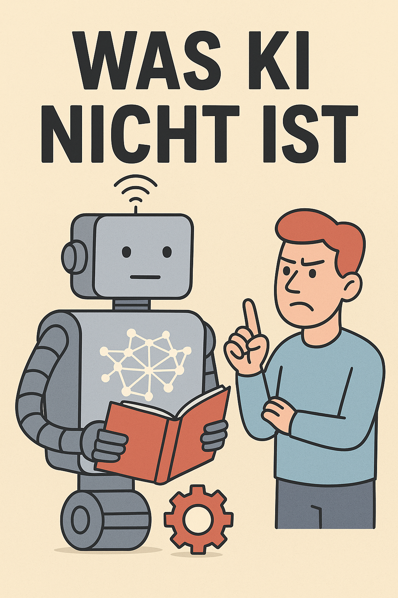
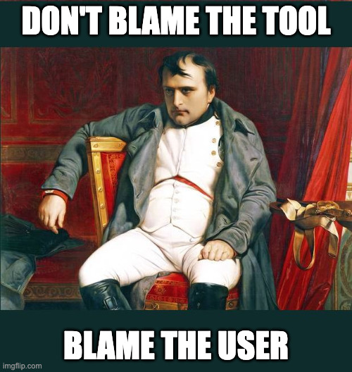

Table of Contents

KI-shit tötet nicht nur Bildung, sondern das Internet (https://halbtagsblog.de/2025/10/07/ki-shit-toetet-nicht-nur-bildung/)
Eine Replik
mit dem wichtigen Hinweis, dass ich nicht aus einer pädagogischen sondern technologischen Sicht argumentiere:
Ich weiß aber auch, dass derzeit mehr als die Hälfte des Datenverkehrs im Internet durch KI erzeugt wird.
Diese Zahl erscheint mir deutlich übertrieben, es ist aber auch nicht ganz klar, ob hier wirklich “Datenverkehr” im engeren Sinn gemeint ist. Ein erheblicher Anteil dürfte auf Musik- und Video-Streaming entfallen. Und auch wenn der Anteil KI-erzeugter Inhalte auf z.B. YouTube stetig zumimmt, dürfte die überwiegende Mehrheit noch “organisch” sein. Laut ericsson macht GenAI (Generative AI) 0,06% des gesamten Traffics aus [1]. Laut Adobe Analytics (einem Tracking-Tool), steigt der Traffic aus AI-Quellen zwar episodisch um bis zu 1.200% - gegenüber anderen Kanälen ist der Anteil aber immer noch eher gering [2]. Betrachtet man nur den Traffic auf Webseiten (untersucht wurden 3.000 Seiten), liegt der Anteil bei 0,17% [3]. Dieses Paper schätzt den Anteil an KI-generierten Texten (!) auf zwischen 30 und 40% [4].
Wir Menschen sind grundsätzlich (und evolutionär bedingt) faul und darauf aus, Energie zu sparen
OK, Ich hole jetzt sehr weit aus: Daran ist ja erstmal nichts falsch, sollen doch Roboter “die Arbeit in den Minen” erledigen. Außerdem vertrete ich die idealistische Ansicht, dass Menschen Energie für das aufwenden, was ihnen Spaß macht und deshalb nicht grundsätzlich faul sind. Natürlich besteht die Gefahr, dass wir uns in einer “durchautomatisierten Welt” nur noch zurücklehnen - in Wall-E werden die Menschen der Zukunft als “faule, übergewichtige” Wesen skiziert, die in “Hover-Chairs” durch ein Raumschiff kutschiert werden. Ist das die übernächste Stufe der Evolution oder wird dieser Lebenswandel einer “natürlichen Auslese” zum Opfer fallen?
Lernen ist genau das Gegenteil davon und fällt genau deshalb so schwer.
Ich vertrete die Ansicht, dass Lernen Spaß machen muss; dann fällt Lernen nicht schwer. Ich war ein äußerst schlechter Schüler (zwei mal sitzen geblieben, beim dritten mal durfte ich die Schule verlassen, beim Fachabi war ich Jahrgangsbester, meine Masterarbeit musste ich zwei mal verteidigen und beim zweiten Mal wurde ich zähneknirschend durchgewunken). Lernen fällt mir aber nicht schwer, ganz im Gegenteil. Themen, die mich interessieren, sauge ich auf, auch jetzt noch. Mich hat die Schule aber nie abgeholt und meinen LehrerInnen war das auch egal. (Mir ist klar, dass sich in den letzten 30 Jahren viel getan hat und es sehr engagierte LehrerInnen gibt. Insofern will ich hier keinesfalls pauschalisieren!)
Schaut man in einen beliebigen Hörsaal, sieht man Studenten (‚die Großen‘) in der letzten Reihe gelangweilt CandyCrush spielen, auf TikTok oder Snapchat surfen und die Zeit absitzen.
Das ist ein systemisches Problem und kein KI-Problem. Denn hier haben entweder der Student oder die Studentin die falsche Erwartungshaltung oder der oder die Dozentin machen schlechten Unterricht. Beides ist möglich und vor allem letzteres habe ich selber erlebt (jaja, subjektiv und anekdotische Evidenz… (◔_◔)).
Im Beruf? Anwälte nutzen chatgpt, um Paper zu schreiben. Pastoren um ihre Predigten zu verfassen. Ärzte, um sich eine weitere Meinung einzuholen.
Darin ist absolut nichts falsch, ganz im Gegenteil: Wenn die AnwältInnen wissen, wie sie ChatGPT sinnvoll einsetzen können ohne juristische Qualität einzubüßen, ist das ein Gewinn für alle. Das gleiche gilt für alle anderen Berufsgruppen.
Weil ich denkfaul bin. Weil es leichter ist, chatgpt eine Idee ausbrüten zu lassen, als selber nachzudenken
Ich denke, das ist die falsche Einstellung. Und diese Aussage zeigt auch ganz deutlich, was ich diametral anders sehe: ChatGPT brütet sie vielleicht aus, die Idee selber muss aber immer noch von mir kommen. Ich darf nicht denkfaul sein, die Erfahrungsberichte rund um Vibecoding zeigen das ganz deutlich. Ein Lagebericht:
Mittlerweile habe ich mir ein kleines Arsenal an Agenten zusammengestellt, die mir bei allen möglichen Aufgaben helfen. Nicht weil ich denkfaul bin, sondern weil ich so meinen Output maximiere. Während Copilot/Claude meine Python/Flask-App baut, rotiert Gemini CLI im Hintergrund über eine Flutter/Dart App. Ich nutze die “freie Zeit” und lasse mir von ChatGPT ein Architektur-Konzept schreiben. Während der Agent daran arbeitet, antworte ich mithilfe von Copilot in Outlook auf E-Mails. Trotzdem darf ich nicht denkfaul sein. Den Output von Copilot/Claude musste ich vier Stunden lang refactoren. Für Gemini muss ich mir genau ausdenken, wie die nächsten Anweisungen aussehen müssen. Den Inhalt der E-Mails muss ich trotzdem erfassen, um entsprechend zu agieren. Und den Blogbeitrag mit meinen Erkenntnissen muss ich immer noch selber schreiben.
Trotz der manuellen Arbeit hat sich meine Produktivität massiv gesteigert. Meine Arbeitsweise hat sich radikal verändert. Nun bin ich sicher nicht der Maßstab, erst Recht nicht im pädagogischen Kontext. Dennoch möchte ich darauf hinweisen, dass man KI nicht als Denkersatz sehen sollte, sondern als Werkzeug. Vielleicht lässt sich das ja auch auf den Unterricht übertragen? Wenn ChatGPT mir meine Hausarbeit schreiben kann, ist das Konzept der Hausarbeit vielleicht überholt (und meiner Meinung nach war es das schon 2010…). ChatGPT kann aber auch eine wunderbare Gesprächspartnerin sein, die mir Quantenphysik erklärt.
Was ich damit sagen will und auch das werfe ich ganz naiv als pädagogischer Laie von der Seitenlinie ein: Vielleicht ist es an der Zeit, das pädagogische Denkmodell zu überdenken?
Die Besuchszahlen vieler Webseiten und Blogs sind drastisch eingebrochen – denn Google bietet Zusammenfassungen der Inhalte an. Damit findet ein Austausch (bspw. über die Kommentarfunktion) gar nicht mehr statt.
Ich habe erst gestern beschrieben, wie ich die aktuelle Entwicklung beurteile. Ich unterscheide hier zwischen “oberflächlichen Traffic”, der nur “an einem Rezept für Apfelkuchen” interessiert ist und “echtem Interesse”, also LeserInnen, die sich für Blogbeiträge interessieren und auch damit interagieren. Welches menschliche Grundbedürfnis wiegt hier höher - Kommunikation oder Konsum? Vielleicht bin ich aber auch der falsche Maßstab (ganz sicher bin ich das (づ ￣ ³￣)づ), aber mich nervt generischer, einfallsloser KI-Slop.
werden Inhalte künstlich aufgebläht und spannender gemacht, als sie sind.
Das ist leider schon seit 20 Jahren ein Problem. Mit KI skaliert es nur besser. Das Problem ist aber nicht KI, sondern das Geschäftsmodell dahinter. Wenn ich mit Clickbait Traffic erzeugen kann, der wiederum für Werbeeinnahmen sorgt, dann ist das ein systemisches Problem. Und mit KI kann ich die Clickbait-Überschriften und den Bullshit-Inhalt effizienter erzeugen. KI ist nur das Mittel zum Zweck.

In einem Internet, das in künstlichem KI-shit ersäuft […] Wenn alles wahr ist, ist nichts wahr. […] Ich habe wenig Hoffnung.
Auch wenn ich bisher sehr kritisch reagiert habe, teile ich den Grundgedanken, der sich in diesen Teilsätzen sehr schön zeigt. Was den “KI-Shit” angeht, sehe ich das Grundproblem allerdings woanders, nämlich in der Mechanik des Systems. Youtube, TikTok, Instagram und Co. funktionieren mit Aufmerksamkeit. Das war schon vor dem KI-Boom ein bekanntes Problem. KI ist hier nur der Multiplikator. Klar ist aber durchaus, dass wir uns einem fundamentalen Glaubhaftigkeitsproblem nähern und KI ist hier ganz deutlich der willfährige Erfüllungsgehilfe (endlich kann ich diese pseudointellektuelle Floskel mal droppen! (⌐■_■)). Und da fehlt auch mir die Hoffnung. Technisch ist dem nicht unbedingt beizukommen, aber gesellschaftlich.

Und ist das nicht eine schöne Herausforderung für die Pädagogik? (und das sage ich bei allergrößtem Respekt für jeden Lehrer und jede Lehrerin; hier ist wohl auch eher die Politik in der Bringschuld, die richtigen Weichen zu stellen)
Zusammenfassung
Der Text widerspricht kulturpessimistischen KI-Narrativen, schildert persönliche Erfahrungen mit Agenten-Workflows und fordert, Lernen sowie pädagogische Modelle als bewusste Nutzung von KI-Werkzeugen neu zu denken.
Hauptthemen: KI Pädagogik Lernen Produktivität Agenten Digitale Bildung
Schwierigkeitsgrad: Einfach
Lesezeit: ca. 6 Minuten